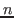
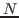
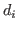
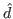

D-ITG (Distributed Internet Traffic Generator) is a platform capable to produce IPv4 and IPv6 traffic by accurately replicating the workload of current Internet applications [1,2,3,4]. At the same time D-ITG is also a network measurement tool able to measure the most common performance metrics (e.g. throughput, delay, jitter, packet loss) at packet level.
D-ITG can generate traffic following stochastic models for packet size (PS) and inter departure time (IDT) that mimic application-level protocol behavior. By specifying the distributions of IDT and PS random variables, it is possible to choose different renewal processes for packet generation: by using characterization and modeling results from literature, D-ITG is able to replicate statistical properties of traffic of different well-known applications (e.g Telnet, VoIP - G.711, G.723, G.729, Voice Activity Detection, Compressed RTP - DNS, network games).
At the transport layer, D-ITG currently supports TCP (Transmission Control Protocol), UDP (User Datagram Protocol), SCTP1(Stream Control Transmission Protocol), and DCCP1 (Datagram Congestion Control Protocol). It also supports ICMP (Internet Control Message Protocol). Among the several features described below, FTP-like passive mode is also supported to conduct experiments in presence of NATs, and it is possible to set the TOS (DS) and TTL IP header fields.
As reported in Fig. 1.1, the architecture of D-ITG comprises different components.
The core features of D-ITG are provided by ITGSend and ITGRecv. ITGSend is the component responsible for generating traffic toward ITGRecv. Exploiting a multithreaded design, ITGSend can send multiple parallel traffic flows toward multiple ITGRecv instances, and ITGRecv can receive multiple parallel traffic flows from multiple ITGSend instances. A signaling channel is created between each couple of ITGSend and ITGRecv components to control the generation of all the traffic flows between them.
ITGSend and ITGRecv can optionally produce log files containing detailed information about every sent and received packet. Such logs can be saved locally or sent - through the network - to the ITGLog component (useful to collect all the measures at a single point or in the case of hosts with limited storage capabilities – e.g., sensors, embedded devices, smartphones, etc.). The ITGDec component is in charge of analyzing the log files in order to extract performance metrics related to the traffic flows.
The experiments (even large-scale ones) can be controlled from a single vantage point: the ITGRecv components act as daemons and can be completely configured and controlled by the ITGSend components that want to send traffic to them. Also the ITGSend components can act as daemons and can be remotely controlled through the D-ITG API. The ITGManager component represents an example of how to use the D-ITG API to remotely control ITGSend. This way, the user can completely control a large-scale distributed experiment from a single vantage point.
The ITGSend component is responsible for generating traffic flows and can work in three different modes:
Every traffic flow generated is described by two stochastic processes relating to Packet Size (PS) and Internet Departure Time (IDT), through which well defined traffic profiles can be generated, emulating application protocols such as VoIP, DNS, etc.. PS and IDT series can also be loaded from a file for each flow. ITGSend can log information about every sent or received packet, when running in One Way or Round Trip mode respectively (see below). In the first case, timestamps (and other information) of sent packets are stored, while in the second case, timestamps (and other information) of sent and received packets are stored. For each flow the source IP address can be specified, which is useful for multi-homed hosts.
The ITGRecv component is responsible for receiving multiple parallel traffic flows generated by one or more ITGSend instances. It normally runs as a multi-threaded daemon listening on a TCP socket for incoming traffic reception requests. Each time a request is received from the network, a new thread is created, which performs all the operations related to the new request (e.g. receiving the packets of the flow). The port numbers on which ITGRecv will receive each flow and any logging activity required on the receiver side can be remotely controlled by ITGSend. A specific signaling protocol, called TSP, allows ITGRecv and ITGSend to properly setup and manage the traffic generation process.
The ITGLog component is responsible for receiving and storing log information possibly sent by ITGSend and ITGRecv. It runs as a multi-threaded daemon listening on a TCP socket for incoming log requests. Log information is received over TCP or UDP protocols on port numbers dynamically allocated in the range [9003-10003].
The ITGDec component is responsible for decoding and analyzing the log files stored during the experiments conducted by using D-ITG.
ITGDec parses the log files generated by ITGSend and ITGRecv and calculates the average values of bitrate, delay and jitter either on the whole duration of the experiment or on variable-sized time intervals.
ITGDec analyzes the log files produced by ITGSend, ITGRecv, and ITGLog in order to produce the following results about each flow and about the whole set of flows:
D-ITG is able to generate multiple unidirectional flows from many senders toward many receivers, each of them having the following features.
D-ITG currently supports the following operating systems:
Independently on the operating system, these are the high-level steps to follow:
In order to show the list of compile-time options available for the
current operating system run:
$ make help
please note that not all the options are available on all operating systems and
the previous command will only show the options available for the current target operating system.
For instance, to enable DEBUG mode using a specific verbosity level the "debug=level" option can be specified on the make command line:
$ make clean all debug=<level>
where level is a positive integer value (bigger value more verbose) and
if set to 0 enables only debugging symbols without increasing the verbosity level.
We report in the following some guidelines specific for each operating system.
All Unix-like OSes (Linux, FreeBSD, OSX)
# make install PREFIX=/usr/local
or as normal user by using the sudo utility:
$ sudo make install PREFIX=/usr/local
The same way the binaries can be removed by the system:
# make uninstall PREFIX=/usr/local
or:
$ sudo make uninstall PREFIX=/usr/local
If not specified, the PREFIX variable takes "/usr/local" as default value.
Linux
$ make T=win
If MinGW is installed in a standard location (e.g. /usr/i686-w64-mingw32 on Ubuntu 12.10)
it will be automatically detected, otherwise it is necessary to set the MINGW variable to
point to the Mingw toolchain path:
$ export MINGW=/usr/local/i686-w64-mingw32
In order to show the options available in this case do:
$ make T=win help
Windows
C:\> set PATH=<Dev-Cpp_dir>\bin:%PATH%
C:\D-ITG-VER-rREV\src> make
otherwise you have to specify the right path setting the DEVDIR variable:
C:\D-ITG-VER-rREV\src> make DEVDIR=<Dev-Cpp_install_path>
Compile-time options are supported also in this case. To list them do:
C:\D-ITG-VER-rREV\src> make help
FreeBSD
$ gmake
OSX
In order to use D-ITG, you have to run at least ITGRecv instance to receive the traffic and one ITGSend instance to send the traffic. They simplest way to try it is to run both instances on the same host, as shown in the quickstart example.
Once obtained the D-ITG binaries, following the instructions reported in section 2, you are ready to start using D-ITG. Here we show a quickstart example in which all the components are executed on the same host and communicate using the loopback interface:
$ ./ITGRecv
$ ./ITGSend -T UDP -a 127.0.0.1 -c 100 -C 10 -t 15000 \
-l sender.log -x receiver.log
This way ITGSend will generate one UDP flow with constant payload size (100 bytes) and constant packet rate (10 pps) for 15 seconds (15000 ms) and two packet-level log files will be generated both on sender (-l option) and receiver (-x option) side.
$ ./ITGDec sender.log
...
$ ./ITGDec receiver.log
...
The result in both cases should be similar to the following one:
----------------------------------------------------------
Flow number: 1
From 127.0.0.1:44225
To 127.0.0.1:8999
----------------------------------------------------------
Total time = 14.944263 s
Total packets = 150
Minimum delay = 0.000000 s
Maximum delay = 0.000000 s
Average delay = 0.000000 s
Average jitter = 0.000000 s
Delay standard deviation = 0.000000 s
Bytes received = 15000
Average bitrate = 8.029837 Kbit/s
Average packet rate = 10.037297 pkt/s
Packets dropped = 0 (0.00 %)
Average loss-burst size = 0.000000 pkt
----------------------------------------------------------
__________________________________________________________
**************** TOTAL RESULTS ******************
__________________________________________________________
Number of flows = 1
Total time = 14.944263 s
Total packets = 150
Minimum delay = 0.000000 s
Maximum delay = 0.000000 s
Average delay = 0.000000 s
Average jitter = 0.000000 s
Delay standard deviation = 0.000000 s
Bytes received = 15000
Average bitrate = 8.029837 Kbit/s
Average packet rate = 10.037297 pkt/s
Packets dropped = 0 (0.00 %)
Average loss-burst size = 0 pkt
Error lines = 0
----------------------------------------------------------
$ ./ITGSend [log_opts] [sig_opts] [flow_opts] [misc_opts]
[ [idt_opts] [ps_opts] | [app_opts] ]
$ ./ITGSend <script_file> [log_opts]
$ ./ITGSend -Q [log_opts]
NOTE: launching ITGSend in background requires to redirect stdin to /dev/null.

flows, the script file has to contain lines, each of them used to specify the characteristics of one flow. Each line can contain all the options illustrated in Section 3.2.3, with the exception of those regarding the logging process. When using this mode, the logging options have to be specified on the command line and refer to all the flows.
Log options (log_opts):
-l [logfile] Generate sender-side log file (default: /tmp/ITGSend.log).
Generates a log file containing timing, ordering and size information
about every packet sent by ITGSend.
Under Windows the default log file name is "ITGSend.log".
-L [log_server_address] Generate sender-side log file on a remote ITGLog instance.
[logging_protocol]
The first parameter sets the log server IP address (default: 127.0.0.1).
The second parameter sets the transport protocol used to establish the
communication between ITGSend and ITGLog: UDP or TCP (default: UDP).
The name of the log file is specified by the -l option.
-x [receiver_logfile] Ask ITGRecv to generate receiver-side log file (default: /tmp/ITGRecv.log).
Generates a log file containing timing, ordering and size information
about every packet received by ITGRecv.
Under Windows the default log file name is "ITGRecv.log".
-X [log_server_address] Ask ITGRecv to generate receiver-side log file on a remote ITGLog instance.
[logging_protocol]
The first parameter sets the log server IP address (default: 127.0.0.1).
The second parameter sets the transport protocol used to establish the
communication between ITGRecv and ITGLog: UDP or TCP (default: UDP).
The name of the log file is specified by the -x option.
-q <log_buffer_size> Number of packets to push to the log at once (default: 50).
Sets how many packets have to be buffered before writing them to the
log file. Since the buffer is flushed (on disk or through the network
towards ITGLog) after this number of packets, using a small value has
impact on the generation performance.
This parameter has effect also when -L and -X options are specified.
Signaling options (sig_opts):
-Sda <signaling_dest_addr> Set the destination address for the signaling channel
(default: equal to -a <dest_address>).
-Sdp <signaling_dest_port> Set the destination port for the signaling channel
(default: 9000).
-Ssa <signaling_src_addr> Set the source address for the signaling channel
(default: Set by O.S.).
-Ssp <signaling_src_port> Set the source port for the signaling channel
(default: Set by O.S.).
-Si <signaling_interface> Set the network interface for the signaling channel
(available only on Linux).
Flow options (flow_opts):
-H Enable NAT traversal: FTP-like passive mode
As for FTP, such mode allows NAT traversal by opening every (TCP and UDP)
connection (for signaling and for traffic generation) in the opposite
direction (i.e. from ITGRecv towards ITGSend). When the option is enabled
ITGSend waits to be contacted by ITGRecv before starting the genearation.
This option is necessary when ITGRecv is behind a NAT, and it requires
the -H option also at reciver side (see ITGRecv help).
-m <meter> Set the type of meter (default: owdm):
- owdm (one-way delay meter)
- rttm (round-trip time meter)
D-ITG does not provide any sort of synchronization among senders and receivers.
In order to correctly measure packet One Way Delay (OWD), the clocks of sender
and receiver must be synchronized by other means.
Otherwise, we suggest to use the Round Trip Time (RTT) meter.
-t <duration> Set the generation duration in ms (default: 10000 ms).
When -t, -z, and/or -k are specified, the most restrictive applies.
-z <#_of_packets> Set the number of packets to generate.
When -t, -z, and/or -k are specified, the most restrictive applies.
-k <#_of_KBytes> Set the number of KBytes to generate.
When -t, -z, and/or -k are specified, the most restrictive applies.
-d <delay> Start the generation after the specified delay in ms (default: 0 ms).
-b <DS_byte> Set the DS byte for QoS tests (default: 0).
The value is interpreted as a decimal number (allowed range [0, 255]),
or as an hexadecimal number using the "0x" prefix (allowed range [0, ff]).
OS specific notes:
- the option is disabled under Windows 2000 and XP, according to the
"Microsoft Knowledge Base Article - 248611".
- Under Linux you need root priviledges to set the DS byte to a value larger
than 160.
-f <TTL byte> Set the IP Time To Live (default: 64).
The value is interpreted as a decimal number (allowed range [0, 255]),
or as an hexadecimal number using the "0x" prefix (allowed range [0, ff]).
-a <dest_address> Set the destination address (default: 127.0.0.1).
This option applies to both traffic flow and signaling channel unless
-Sda option is also specified.
-sa <src_address> Set the source address (default: Set by O.S.).
-rp <dest_port> Set the destination port (default: 8999).
This option applies only to traffic flows (i.e. not to signaling channel).
See above for signaling channel.
-sp <src_port> Set the source port (default: Set by O.S.).
This option applies only to traffic flow. See above for signaling channel.
-i <interface> Bind to the given interface (default: don't bind to any interface).
-p <payload_metadata> Select the metadata sent in the payload of each packet (default: 0).
Sets the type of information sent into the payload of each packet.
Valid values are:
- 0 standard information is sent in the packet payload;
- 1 only the sequence numbers are sent in the packet payload;
- 2 no information is sent in the packet payload.
-T <protocol> Layer 4 protocol (default: UDP):
- UDP (User Datagram Protocol)
- TCP (Transport Control Protocol)
Being TCP a stream-oriented protocol, the enforcement of
payload sizes is not guaranteed, especially when imposing
high packet rates. In this case the payload of subsequent
packets could be merged and then splitted again according
to the MSS value. The "-D" option may help in avoiding
this phenomenon, but many pre-compiled kernels have this
feature disabled and would just ignore it.
- ICMP [type] (Internet Control Messaging Protocol)
The default type is 8 (i.e. ECHO request).
Note: To use ICMP under Linux you need root
priviledges for both ITGSend and ITGRecv.
- SCTP <association_id>
<max_streams> (Session Control Transport Protocol)
SCTP protocol is currently supported only under Linux.
Not all the features of this protocol are supported yet.
Multi-streaming is partially supported but currently disabled.
The <association_id> sub-option identifies the SCTP session,
while the <max_streams> sub-option defines how many streams
will be part of the session.
The streams part of the same SCTP session have to be specified
as separate flows with the same values for both sub-options.
To enable this option D-ITG has to be compiled with
"sctp" option enabled (i.e. make sctp=on).
- DCCP (Datagram Congestion Control Protocol)
DCCP protocol is currently supported only under Linux.
DCCP is a message-oriented protocol like UDP with
some new features. It implements not only congestion
control and congestion control negotiation, but also
reliable connection setup, teardown, and feature
negotiation. DCCP is supported only under Linux.
To enable this option D-ITG has to be compiled with
"dccp" option enabled (i.e. make dccp=on).
-D Disable TCP Nagle algorithm.
This option has effect only when using the TCP protocol and should allow to better
enforce the imposed payload size for each packet.
Note: many pre-compiled kernels have this feature disabled and would just ignore it.
Inter-departure time options (idt_opts):
-C <rate> Constant (default: 1000 pkts/s).
-U <min_rate> Uniform distribution.
<max_rate>
-E <mean_rate> Exponential distribution.
-N <mean> <std_dev> Normal distribution.
-O <mean> Poisson distribution.
-V <shape> <scale> Pareto distribution.
-Y <shape> <scale> Cauchy distribution.
-G <shape> <scale> Gamma distribution.
-W <shape> <scale> Weibull distribution.
-Ft <filename> Read IDTs from file (in ms).
The input file provided has to contain each value on a different line.
-B <onDistro> <params>
<offDistro> <params>
Generate bursty traffic:
Sets the duration of both ON and OFF periods according to a
supported random distribution (e.g. -B C 1000 C 1000).
Using this option the flow generates traffic in bursts, where the duration of ON
and OFF periods can be set according to all the supported distributions.
Notes:
This option has to be the last one on the command line.
To enable this option D-ITG has to be compiled with "bursty" option enabled
(i.e. make bursty=on).
Note:
- The IDT random variable provides the inter-departure time expressed in milliseconds.
- For the sake of simplicity, in case of Constant, Uniform, Exponential and Poisson variables, each
parameter, say it x, is considered as a packet rate value in packets per second. It is then
internally converted to a IDT in milliseconds (y -> 1000/x).
Packet size options (ps_opts):
-c <pkt_size> Constant (default: 512 bytes).
-u <min_pkt_size> Uniform distribution.
<max_pkt_size>
-e <average_pkt_size> Exponential distribution.
-n <mean> <std_dev> Normal distribution.
-o <mean> Poisson distribution.
-v <shape> <scale> Pareto distribution.
-y <shape> <scale> Cauchy distribution.
-g <shape> <scale> Gamma distribution.
-w <shape> <scale> Weibull distribution.
-Fs <filename> Read payload sizes from file.
The input file provided has to contain each value on a different line,
in agreement with the format of the output generated when using ITGDec
with the -P option.
Application layer options (app_opts):
-Fp <filename> Read payload content from file.
Telnet Emulate Telnet traffic.
Generates traffic with Telnet characteristics. It works with TCP transport layer protocol.
Different settings will be ignored.
DNS Emulate DNS traffic.
Generates traffic with DNS characteristics. It works with both UDP and TCP transport
layer protocols.
Quake3 Emulate Quake 3 traffic \cite{2}.
Generates traffic with Quake III Arena characteristics. No option is required. It only
works with UDP Transport Layer protocol. Different settings will be ignored.
CSa Emulate Counterstrike traffic - active player \cite{1}.
Generates traffic with Counter Strike characteristics related to the active
phase of the game. No option is required. It only works with UDP Transport
Layer protocol. Different settings will be ignored.
CSi Emulate Counterstrike traffic - idle player \cite{1}.
Generates traffic with Counter Strike characteristics related to the inactive
phase of the game. No option is required. It only works with UDP Transport
Layer protocol. Different settings will be ignored.
VoIP Emulate Voice-over-IP traffic.
-x <codec> VoIP sub-option: audio codec (default: G.711.1):
- G.711.<1 or 2> (samples per pkt)
- G.729.<2 or 3> (samples per pkt)
- G.723.1
-h <protocol> VoIP sub-option: audio transfer protocol (default: RTP):
- RTP: Real Time Protocol (default)
- CRTP: Real Time Protocol with header compression
-VAD VoIP sub-option: enable voice activity detection.
Generate traffic with VoIP characteristics. It only works with UDP transport
layer protocol. Different settings will be ignored.
The emulation of the following codecs is supported:
- G.711.1: for G.711 codec with 1 sample per pkt (default)
- G.711.2: for G.711 codec with 2 samples per pkt
- G.723.1: for G.723.1 codec
- G.729.2: for G.729 codec with 2 samples per pkt
- G.729.3: for G.729 codec with 3 samples per pkt
Note:
- Emulation is obtained by properly replicating packet sizes and IDTs. The payload of the
application is not reproduced (i.e. bytes above transport layer have no real meaning).
- Application layer options have to be specified as the last option.
- If you specify an application layer protocol you cannot specify any inter-departure time,
or packet size option.
Misc options (misc_opts):
-h | --help Display this help and exit.
-s <seed> Set the seed used for generating distributions (default: random).
Sets the seed for the random number generator (allowed range [0,1]).
-poll Use busy-wait loop for IDTs shorter than 1 msec.
-j <0|1> Guarantee the mean packet rate (default: 1):
- 0 (disable)
- 1 (enable)
Normally, depending on the selected IDT distribution, ITGSend sleeps
some time before sending each packet. It can happen that the thread
responible for generating the packets wakes up in late, thus causing
an average packet rate smaller than the expected one.
If enabled, all the packets ITGSend was unable to send in the previous
interval are sent in late in the next one in order to guarantee the
expected mean bitrate.
-sk <serial_iface> Raise a signal on the serial interface when sending packets.
Instructs ITGSend to raise a signal on the specified serial interface
every time a packet is sent.
OS specific notes:
- Typical values under Windows are COM1, COM2, etc.
- Typicsl values under Linux are ttys0, ttys1, etc.
-rk <serial_iface> Ask ITGRecv to raise a signal on the serial interface when receiving packets.
Instructs ITGRecv to raise a signal on the specified serial interface
every time a packet is received.
OS specific notes:
- Typical values under Windows are COM1, COM2, etc.
- Typicsl values under Linux are ttys0, ttys1, etc.
-P Enable thread high priority (available only on Windows platform).
./ITGRecv [options]
NOTE: launching ITGRecv in background requires to redirect stdin to /dev/null
-h | --help Display this help and exit
-P Enable thread high priority (available only on Windows platform).
-a <bind_address> Bind data channels to a specific address.
Sets the address ITGRecv has to bind to for receiving traffic flows.
If the -a option is not specified, each socket is bound to the
address specified by ITGSend with the -a option.
-i <interface> Bind data channels to a specific network interface.
Sets the interface ITGRecv has to bind to for receiving traffic flows
(only available on Linux platforms).
If the -i option is not specified, each socket is bound to the
interface owning the address specified by ITGSend with the -a option.
-Si <interface> Bind signaling channels to a specific network interface.
Sets the interface ITGRecv has to bind to when listening for signaling
connections (only Linux platforms).
If the -Si option is not specified, ITGRecv listens on all the interfaces.
-Sp <port> Signaling channel port number (default: 9000).
Sets the TCP port number on which ITGRecv listens for signaling channels.
-l [logfile] Enable logging to file (default filename: /tmp/ITGRecv.log).
Generates a log file containing timing, ordering and size information about
every received packet.
Under Windows the default log file name is "ITGRecv.log".
If the -l option is specified at the ITGRecv side and the -x option is
set at the ITGSend side (with different log file names), the latter
option is ignored.
If the -l option is not specified, each ITGSend instance may specify a
different log filename by means of the -x option.
-L [a:<address>] Enable remote logging to a remote ITGLog.
[p:<port>]
[P:<protocol>] The "a" sub-option sets the ITGLog server IP address (default: 127.0.0.1).
The "p" sub-option sets the ITGLog server signaling port (default: 9001).
The "P" sub-option sets the transport protocol used to establish the
communication with ITGLog: UDP or TCP (default: UDP).
The name of the log file is specified by the -l option.
If the -L option is specified at the ITGRecv side and the -X option is
set at the ITGSend side, then the latter is ignored.
If the -L option is not specified, each ITGSend instance may specify a
different log server by means of the -X option.
-q <log_buffer_size> Number of packets to push to the log at once (default: 50).
Sets how many packets have to be buffered before writing them to the
log file. Since the buffer is flushed after every this number of packets,
using a small value has impact on the generation performance.
This parameter has effect also when the -L option is specified.
-H <ITGSend_address> Enable "Passive Mode" toward the specified ITGSend instance.
This mode allows to receive traffic flows from an ITGSend instance when
ITGRecv is behind a NAT.
When enabled, ITGRecv does not run as a daemon. Instead it tries
to establish a signaling channel towards the specified ITGSend.
The related data flows are also initiated by ITGRecv in order to correctly
setup the NAT to receive the incoming traffic.
Note that this option allows to send and received only one set of flows.
ITGRecv exits after receiving the last flow of the set.
-n <num_pkt> Number of outgoing packets for UDP NAT traversal
When in passive mode, this option sets the number of UDP packets to send
from ITGRecv towards ITGSend to instruct the NAT before receiving
the UDP traffic flow from ITGSend. This option does not apply to TCP
traffic flows, as the three-way handshake of TCP is sufficient for
instructing the NAT.
./ITGLog [options]
NOTE: launching ITGLog in background requires to redirect stdin to /dev/null
-h | --help Display this help and exit
-q <log_buffer_size> Number of packets to push to the log at once (default: 50)
Sets how many packets have to be buffered before writing them to the
log file. Since the buffer is flushed every this number of packets,
using a small value has impact on the generation performance.
This parameter has effect also when the -L option is specified.
./ITGDec <logfile> [options]
-v Print standard summary to stdout (default).
Prints to stdout a summary comprising a set of statistics about each
flow and the whole set of flows.
-l <txtlog> Print to <txtlog> the decoded log in text format.
Generates the <txtlog> output log file in text format.
For each packet the log file contains a line with the following fields:
- Flow: the flow number
- Seq: the sequence number of the packet
- Src: the source IP address and port number (e.g. 127.0.0.1/44225)
- Dest: the destination IP address and port number (e.g. 127.0.0.1/8999)
- txTime: the transmission time (e.g. 8:23:52.874105)
- rxTime: the reception time (e.g. 8:23:52.874105)
- Size: the size of the packet payload in bytes
-t Interpret <logfile> as in text format.
The input log file is considered to be in text format as generated by
using the -l option. If not specified the input log file is considered
to be in binary format.
-o <outfile> Print to <outfile> the decoded log for Octave/Matlab import.
Generates the <outfile> output log file in a format that can be directly
imported from Octave/Matlab for further analysis.
The output log content is the same as the one generated by the -l option.
-r <sender_log> Generate combined log file starting from receiver- and sender-side log files
[combined_log] (default filename: 'combined.dat').
Generates the <combined_log> binary log file starting from a receiver-side
log file, given as <logfile> parameter, and the corresponding sender-side
<sender_log> log file. This is useful when ITGSend is launched with the "-p"
option having a value different from 2, because it does not insert into each
packet the transmission timestamp. Using this option, this timestamp is
recovered from the log file generated by ITGSend.
-d <DT> [filename] Print average delay to file every <DT> milliseconds
(default filename: 'delay.dat').
Dumps to file the average packet transmission delay in milliseconds as
sampled every <DT> milliseconds.
The first line of the output file represents the table header. The
following lines represent the table rows and comprise the follwing columns:
- the "Time" column contains a time reference;
- the following columns, labelled as "<flow number>-<sender ip>-<receiver ip>",
contain the average value for each flow;
- the "Aggregate-Flow" column contains the aggregate average delay.
-j <JT> [filename] Print average jitter to file every <JT> milliseconds
(default filename: 'jitter.dat').
Dumps to file the average packet jitter in milliseconds as sampled every
<JT> milliseconds.
The file format is the same as the one produced with the "-d" option.
-b <BT> [filename] Print average bitrate to file every <BT> milliseconds
(default filename: 'bitrate.dat').
Dumps to file the average bitrate in Kbit/sec as sampled every
<BT> milliseconds.
The file format is the same as the one produced with the "-d" option.
-p <PT> [filename] Print average packet loss to file every <PT> milliseconds
(default filename: 'packetloss.dat').
Dumps to file the average packet loss in packets/sec as sampled every
<PT> milliseconds.
The file format is the same as the one produced with the "-d" option.
-c <CT> [filename] Print all average metrics to file every <CT> milliseconds
(default filename: 'combined_stats.dat').
Dumps to file all the average metrics as sampled every <PT> milliseconds.
Each line of the output file respectively contains the follwing fields:
- "Time", "Bitrate", "Delay", "Jitter", "Packet loss"
-s [suffix] Generate a separate log file for each flow adding a suffix to its name
(default suffix: log).
The input log file is split in N separate log files, where N is the number
of flows detected in the log file.
Each resulting log file will have the following filename format:
"<flow number>-<sender ip address>-<receiver ip address>.<suffix>.dat".
If not provided, the default value for suffix is "log".
-f <flownum> Consider only flows with number <= <flownum>.
Setting <flownum> to 't' all packets are considered as part of the same flow.
If <flownum> is a number, only the flows with flow number less or equal than
<flownum> will be considered. If <flownum> is set to "t" all the packets will
be considered as belonging to the same flow.
-P Print to stdout the size of each packet.
-I Print to stdout the inter departure time between each packet pair.
-h | --help Display this help and exit.
The values reported in the standard summary are computed according to the log records as follows:

is the number of considered packets,
is the delay of packet , and
is the average delay of packets.
The physical meaning of the metrics reported by analyzing the log files varies depending on the metric selected (One-Way or Round-Trip) when conducting the experiment and on the component that generated the log file (ITGSend or ITGRecv):
IMPORTANT! D-ITG does not provide any sort of synchronization among its components.
In order to correctly measure the One Way Delay (OWD), the clocks of the host running ITGSend and ITGRecv must be synchronized by some means. Depending on the required accuracy, NTP, GPS, or other means can be used.
In the case of synchronization issues we suggest to use the Round Trip Time (RTT) meter.
ITGplot is an Octave (http://www.octave.org) script that enables to draw plots using data contained in delay.dat, bitrate.dat, jitter.dat or packetloss.dat (see Section 3.5.2). The plot is saved (in the EPS format) in a file having the same name as the input file and the .eps extension. It is possible to save the plots in other formats by changing the graphicformat string in ITGplot. The available formats are those provided by gnuplot (run gnuplot and type `set term' to see the list of the available terminal types). It is also possible to give a title to the plot by setting the environment variable DITG_PLOT_TITLE.
octave ITGplot <input_file> [flow_set]
<input_file> The .dat file containing the data to be plotted.
It might be one of the .dat files produced by ITGDec.
[flow_set] The subset of flows to be plotted, expressed in the Octave notation.
Thus, "2:4" allows to plot the second, the third and the fourth flows,
while "[1 3 5]" allows to plot the first, the third and the fifth flows
(remember: double quotes are needed to enclose values containing blanks).
If not specified, all the flows are plotted.
If you want to set a title for the plot, you can use the env command:
env DITG_PLOT_TITLE="A wonderful plot" ITGplot bitrate.dat "[1 4 6]"
octave --exec-path "C:\Program Files\GNU Octave VERSION\bin" ITGplot bitrate.dat
set OCTAVE_EXEC_PATH="C:\Program Files\GNU Octave VERSION\bin"
edit "C:\Program Files\GNU Octave VERSION\opt\octave\share\octave\site\m\startup\octaverc"
EXEC_PATH="C:\\Program Files\\GNU Octave VERSION\\bin"
If you want to set a title for the plot, you can type:
set DITG_PLOT_TITLE="A wonderful plot"
before executing ITGplot.
ITGapi is a C++ API that enables to remotely control traffic generation. For this purpose, after having launched ITGSend in daemon mode (ITGSend -Q) on one or more traffic source nodes, it is possible to use the following function to remotely coordinate the traffic generation for each ITGSend instance:
int DITGsend(char *sender, char *message);
where:
ITGSend, when used in daemon mode, sends messages back to the application that issued the generation of the traffic flow. Two types of messages are used, one to acknowledge the start of the generation process and the other to notify its end.
The following functions allows to catch these messages:
int catchManagerMsg(char **senderIP, char **msg);
where:
The above mentioned prototypes are declared in the ITGapi.h header file.
D-ITG includes ITGManager.cpp, which is just a simple example of application based on ITGapi to remotely control traffic generation.
All the usage examples reported in this section assume that the binaries are being executed from the folder containing the D-ITG binaries.
$ ./ITGRecv
$ ./ITGSend -a 10.0.0.3 -sp 9400 -rp 9500 -C 100 -c 500 -t 20000 -x recv_log_file
$ ./ITGSend -H -C 10 -c 50 -t 10000 -l send_log_file
$ ./ITGRecv -H 192.168.0.4
$ ./ITGRecv -l recv_log_file
$ ./ITGSend -a 10.0.0.3 -rp 9501 -C 1000 -u 500 1000 -l send_log_file
$ ./ITGDec recv_log_file
----------------------------------------------------------
Flow number: 1
From 10.0.0.4:34771
To 10.0.0.3:9501
----------------------------------------------------------
Total time = 10.001837 s
Total packets = 10000
Minimum delay = 3633.445701 s
Maximum delay = 3633.464808 s
Average delay = 3633.449749 s
Average jitter = 0.000706 s
Delay standard deviation = 0.001364 s
Bytes received = 7498028
Average bitrate = 5997.320692 Kbit/s
Average packet rate = 999.816334 pkt/s
Packets dropped = 0 (0.00 %)
----------------------------------------------------------
**************** TOTAL RESULTS ******************
Number of flows = 1
Total time = 10.001837 s
Total packets = 10000
Minimum delay = 3633.445701 s
Maximum delay = 3633.464808 s
Average delay = 3633.449749 s
Average jitter = 0.000706 s
Delay standard deviation = 0.036939 s
Bytes received = 7498028
Average bitrate = 5997.320692 Kbit/s
Average packet rate = 999.816334 pkt/s
Packets dropped = 0 (0.00 %)
Error lines = 0
Note: see the very large delay values caused by absence of clock synchronization!
$ ./ITGDec send_log_file
----------------------------------------------------------
Flow number: 1
From 10.0.0.4:34771
To 10.0.0.3:9501
----------------------------------------------------------
Total time = 9.999002 s
Total packets = 10000
Minimum delay = 0.000000 s
Maximum delay = 0.000000 s
Average delay = 0.000000 s
Average jitter = 0.000000 s
Delay standard deviation = 0.000000 s
Bytes received = 7498028
Average bitrate = 5999.021102 Kbit/s
Average packet rate = 1000.099810 pkt/s
Packets dropped = 0 (0.00 %)
----------------------------------------------------------
**************** TOTAL RESULTS ******************
Number of flows = 1
Total time = 9.999002 s
Total packets = 10000
Minimum delay = 0.000000 s
Maximum delay = 0.000000 s
Average delay = 0.000000 s
Average jitter = 0.000000 s
Delay standard deviation = 0.000000 s
Bytes received = 7498028
Average bitrate = 5999.021102 Kbit/s
Average packet rate = 1000.099810 pkt/s
Packets dropped = 0 (0.00 %)
Error lines = 0
----------------------------------------------------------
$ ./ITGLog
$ ./ITGRecv
$ ITGSend -a 10.0.0.3 -rp 9501 -C 1000 -u 500 1000 \
-l send_log_file -L 10.0.0.3 UDP -X 10.0.0.3 UDP -x recv_log_file
$ ITGDec recv_log_file
----------------------------------------------------------
Flow number: 1
From 10.0.0.4:34772
To 10.0.0.3:9501
----------------------------------------------------------
Total time = 9.993970 s
Total packets = 9997
Minimum delay = 3633.432089 s
Maximum delay = 3633.504881 s
Average delay = 3633.436616 s
Average jitter = 0.000795 s
Delay standard deviation = 0.004083 s
Bytes received = 7495843
Average bitrate = 6000.292576 Kbit/s
Average packet rate = 1000.303183 pkt/s
Packets dropped = 2 (0.00 %)
----------------------------------------------------------
**************** TOTAL RESULTS ******************
Number of flows = 1
Total time = 9.993970 s
Total packets = 9997
Minimum delay = 3633.432089 s
Maximum delay = 3633.504881 s
Average delay = 3633.436616 s
Average jitter = 0.000795 s
Delay standard deviation = 0.063898 s
Bytes received = 7495843
Average bitrate = 6000.292576 Kbit/s
Average packet rate = 1000.303183 pkt/s
Packets dropped = 2 (0.00 %)
Error lines = 0
----------------------------------------------------------
$ ITGDec send_log_file
----------------------------------------------------------
Flow number: 1
From 10.0.0.4:34772
To 10.0.0.3:9501
----------------------------------------------------------
Total time = 9.999001 s
Total packets = 10000
Minimum delay = 0.000000 s
Maximum delay = 0.000000 s
Average delay = 0.000000 s
Average jitter = 0.000000 s
Delay standard deviation = 0.000000 s
Bytes received = 7498028
Average bitrate = 5999.021702 Kbit/s
Average packet rate = 1000.099910 pkt/s
Packets dropped = 0 (0.00 %)
----------------------------------------------------------
**************** TOTAL RESULTS ******************
Number of flows = 1
Total time = 9.999001 s
Total packets = 10000
Minimum delay = 0.000000 s
Maximum delay = 0.000000 s
Average delay = 0.000000 s
Average jitter = 0.000000 s
Delay standard deviation = 0.000000 s
Bytes received = 7498028
Average bitrate = 5999.021702 Kbit/s
Average packet rate = 1000.099910 pkt/s
Packets dropped = 0 (0.00 %)
Error lines = 0
$ ./ITGLog
$ ./ITGRecv
$ cat > script_file <<END
-a 10.0.0.3 -rp 10001 -C 1000 -c 512 -T UDP
-a 10.0.0.3 -rp 10002 -C 2000 -c 512 -T UDP
-a 10.0.0.3 -rp 10003 -C 3000 -c 512 -T UDP
END
$ ./ITGSend script_file -l send_log_file -L 10.0.0.4 UDP -X 10.0.0.4 UDP -x recv_log_file
$ ./ITGDec recv_log_file
----------------------------------------------------------
Flow number: 3
From 10.0.0.4:34775
To 10.0.0.3:10003
----------------------------------------------------------
Total time = 10.016555 s
Total packets = 6098
Minimum delay = 3633.409810 s
Maximum delay = 3634.259565 s
Average delay = 3633.507249 s
Average jitter = 0.002100 s
Delay standard deviation = 0.156419 s
Bytes received = 3122176
Average bitrate = 2493.612624 Kbit/s
Average packet rate = 608.792145 pkt/s
Packets dropped = 22216 (78.00 %)
----------------------------------------------------------
----------------------------------------------------------
Flow number: 1
From 10.0.0.4:34773
To 10.0.0.3:10001
----------------------------------------------------------
Total time = 9.638360 s
Total packets = 2269
Minimum delay = 3633.402899 s
Maximum delay = 3634.260524 s
Average delay = 3633.461365 s
Average jitter = 0.003114 s
Delay standard deviation = 0.135945 s
Bytes received = 1161728
Average bitrate = 964.253670 Kbit/s
Average packet rate = 235.413494 pkt/s
Packets dropped = 4274 (65.00 %)
----------------------------------------------------------
----------------------------------------------------------
Flow number: 2
From 10.0.0.4:34774
To 10.0.0.3:10002
----------------------------------------------------------
Total time = 10.000351 s
Total packets = 3136
Minimum delay = 3633.407982 s
Maximum delay = 3634.455203 s
Average delay = 3633.514464 s
Average jitter = 0.002740 s
Delay standard deviation = 0.221725 s
Bytes received = 1605632
Average bitrate = 1284.460515 Kbit/s
Average packet rate = 313.588993 pkt/s
Packets dropped = 16864 (84.00 %)
----------------------------------------------------------
**************** TOTAL RESULTS ******************
Number of flows = 3
Total time = 10.038005 s
Total packets = 11503
Minimum delay = 3633.402899 s
Maximum delay = 3634.455203 s
Average delay = 3633.500165 s
Average jitter = 0.003291 s
Delay standard deviation = 0.417552 s
Bytes received = 5889536
Average bitrate = 4693.790051 Kbit/s
Average packet rate = 1145.944837 pkt/s
Packets dropped = 43354 (79.00 %)
Error lines = 0
$ ./ITGDec send_log_file
----------------------------------------------------------
Flow number: 3
From 10.0.0.4:34775
To 10.0.0.3:10003
----------------------------------------------------------
Total time = 9.997255 s
Total packets = 28480
Minimum delay = 0.000000 s
Maximum delay = 0.000000 s
Average delay = 0.000000 s
Average jitter = 0.000000 s
Delay standard deviation = 0.000000 s
Bytes received = 14581760
Average bitrate = 11668.611034 Kbit/s
Average packet rate = 2848.781991 pkt/s
Packets dropped = 0 (0.00 %)
----------------------------------------------------------
----------------------------------------------------------
Flow number: 1
From 10.0.0.4:34773
To 10.0.0.3:10001
----------------------------------------------------------
Total time = 9.603001 s
Total packets = 9604
Minimum delay = 0.000000 s
Maximum delay = 0.000000 s
Average delay = 0.000000 s
Average jitter = 0.000000 s
Delay standard deviation = 0.000000 s
Bytes received = 4917248
Average bitrate = 4096.426107 Kbit/s
Average packet rate = 1000.104030 pkt/s
Packets dropped = 0 (0.00 %)
----------------------------------------------------------
----------------------------------------------------------
Flow number: 2
From 10.0.0.4:34774
To 10.0.0.3:10002
----------------------------------------------------------
Total time = 9.999501 s
Total packets = 20000
Minimum delay = 0.000000 s
Maximum delay = 0.000000 s
Average delay = 0.000000 s
Average jitter = 0.000000 s
Delay standard deviation = 0.000000 s
Bytes received = 10240000
Average bitrate = 8192.408801 Kbit/s
Average packet rate = 2000.099805 pkt/s
Packets dropped = 0 (0.00 \%)
----------------------------------------------------------
**************** TOTAL RESULTS ******************
Number of flows = 3
Total time = 10.013192 s
Total packets = 58084
Minimum delay = 0.000000 s
Maximum delay = 0.000000 s
Average delay = 0.000000 s
Average jitter = 0.000000 s
Delay standard deviation = 0.000000 s
Bytes received = 29739008
Average bitrate = 23759.862390 Kbit/s
Average packet rate = 5800.747654 pkt/s
Packets dropped = 0 (0.00 %)
Error lines = 0
$ ./ITGRecv -l recv1_log_file
$ ./ITGRecv -l recv2_log_file
$ cat > script_file <<END
-a 10.0.0.3 -rp 10001 VoIP -x G.711.2 -h RTP -VAD
-a 10.0.0.4 -rp 10002 Telnet
-a 10.0.0.4 -rp 10003 DNS
END
$ ./ITGSend script_file -l sender_log_file
$ ./ITGDec sender_log_file
----------------------------------------------------------
Flow number: 2
From 10.0.0.4:33029
To 10.0.0.4:10002
----------------------------------------------------------
Total time = 9.998991 s
Total packets = 1139
Minimum delay = 0.000000 s
Maximum delay = 0.000000 s
Average delay = 0.000000 s
Average jitter = 0.000000 s
Delay standard deviation = 0.000000 s
Bytes received = 2482
Average bitrate = 1.985800 Kbit/s
Average packet rate = 113.911494 pkt/s
Packets dropped = 0 (0.00 %)
----------------------------------------------------------
----------------------------------------------------------
Flow number: 1
From 10.0.0.4:34776
To 10.0.0.3:10001
----------------------------------------------------------
Total time = 9.980002 s
Total packets = 500
Minimum delay = 0.000000 s
Maximum delay = 0.000000 s
Average delay = 0.000000 s
Average jitter = 0.000000 s
Delay standard deviation = 0.000000 s
Bytes received = 56000
Average bitrate = 44.889771 Kbit/s
Average packet rate = 50.100190 pkt/s
Packets dropped = 0 (0.00 %)
----------------------------------------------------------
----------------------------------------------------------
Flow number: 3
From 10.0.0.4:34775
To 10.0.0.4:10003
----------------------------------------------------------
Total time = 8.928575 s
Total packets = 6
Minimum delay = 0.000000 s
Maximum delay = 0.000000 s
Average delay = 0.000000 s
Average jitter = 0.000000 s
Delay standard deviation = 0.000000 s
Bytes received = 1507
Average bitrate = 1.350271 Kbit/s
Average packet rate = 0.672000 pkt/s
Packets dropped = 0 (0.00 %)
----------------------------------------------------------
**************** TOTAL RESULTS ******************
Number of flows = 3
Total time = 10.027982 s
Total packets = 1645
Minimum delay = 0.000000 s
Maximum delay = 0.000000 s
Average delay = 0.000000 s
Average jitter = 0.000000 s
Delay standard deviation = 0.000000 s
Bytes received = 59989
Average bitrate = 47.857286 Kbit/s
Average packet rate = 164.040981 pkt/s
Packets dropped = 0 (0.00 %)
Error lines = 0
----------------------------------------------------------
$ ./ITGDec recv1_log_file
----------------------------------------------------------
Flow number: 1
From 10.0.0.4:34776
To 10.0.0.3:10001
----------------------------------------------------------
Total time = 9.980004 s
Total packets = 500
Minimum delay = 3633.375466 s
Maximum delay = 3633.384447 s
Average delay = 3633.376101 s
Average jitter = 0.000138 s
Delay standard deviation = 0.000259 s
Bytes received = 56000
Average bitrate = 44.889762 Kbit/s
Average packet rate = 50.100180 pkt/s
Packets dropped = 0 (0.00 %)
----------------------------------------------------------
**************** TOTAL RESULTS ******************
Number of flows = 1
Total time = 9.980004 s
Total packets = 500
Minimum delay = 3633.375466 s
Maximum delay = 3633.384447 s
Average delay = 3633.376101 s
Average jitter = 0.000138 s
Delay standard deviation = 0.016080 s
Bytes received = 56000
Average bitrate = 44.889762 Kbit/s
Average packet rate = 50.100180 pkt/s
Packets dropped = 0 (0.00 %)
Error lines = 0
$ ./ITGDec recv2_log_file
----------------------------------------------------------
Flow number: 2
From 10.0.0.4:33029
To 10.0.0.4:10002
----------------------------------------------------------
Total time = 9.998989 s
Total packets = 1139
Minimum delay = 0.000019 s
Maximum delay = 0.000934 s
Average delay = 0.000034 s
Average jitter = 0.000014 s
Delay standard deviation = 0.000056 s
Bytes received = 2482
Average bitrate = 1.985801 Kbit/s
Average packet rate = 113.911516 pkt/s
Packets dropped = 0 ( 0 %)
----------------------------------------------------------
----------------------------------------------------------
Flow number: 3
From 10.0.0.4:34775
To 10.0.0.4:10003
----------------------------------------------------------
Total time = 8.928556 s
Total packets = 6
Minimum delay = 0.000023 s
Maximum delay = 0.000042 s
Average delay = 0.000028 s
Average jitter = 0.000005 s
Delay standard deviation = 0.000006 s
Bytes received = 1507
Average bitrate = 1.350274 Kbit/s
Average packet rate = 0.672001 pkt/s
Packets dropped = 0 ( 0 \%)
----------------------------------------------------------
**************** TOTAL RESULTS ******************
Number of flows = 2
Total time = 10.023268 s
Total packets = 1145
Minimum delay = 0.000019 s
Maximum delay = 0.000934 s
Average delay = 0.000034 s
Average jitter = 0.000014 s
Delay standard deviation = 0.007472 s
Bytes received = 3989
Average bitrate = 3.183792 Kbit/s
Average packet rate = 114.234200 pkt/s
Packets dropped = 0 ( 0 %)
Error lines = 0
----------------------------------------------------------
$ ./ITGRecv
$ ./ITGSend -a 192.168.1.10 -m RTTM -T SCTP 3 1 -rp 9030 -l send_log_file
$ ./ITGDec send_log_file
----------------------------------------------------------
Flow number: 1
From 192.168.1.5:32772
To 192.168.1.10:9030
----------------------------------------------------------
Total time = 9.998896 s
Total packets = 10000
Minimum delay = 0.000000 s
Maximum delay = 0.000000 s
Average delay = 0.000000 s
Average jitter = 0.000000 s
Delay standard deviation = 0.000000 s
Bytes received = 5120000
Average bitrate = 4096.452248 Kbit/s
Average packet rate = 1000.110412 pkt/s
Packets dropped = 0 (0.00 %)
----------------------------------------------------------
**************** TOTAL RESULTS *****************
Number of flows = 1
Total time = 9.998896 s
Total packets = 10000
Minimum delay = 0.000000 s
Maximum delay = 0.000000 s
Average delay = 0.000000 s
Average jitter = 0.000000 s
Delay standard deviation = 0.000000 s
Bytes received = 5120000
Average bitrate = 4096.452248 Kbit/s
Average packet rate = 1000.110412 pkt/s
Packets dropped = 0 (0.00 %)
Error lines = 0
----------------------------------------------------------
$ ./ITGRecv
$ ./ITGSend -a 192.168.1.10 -m RTTM -T DCCP -rp 9030 -l send_log_file
$ ./ITGDec send_log_file
---------------------------------------------------------- Flow number: 1 From 192.168.1.5:47426 To 192.168.1.10:9030 ---------------------------------------------------------- Total time = 9.998912 s Total packets = 10000 Minimum delay = 0.000000 s Maximum delay = 0.000000 s Average delay = 0.000000 s Average jitter = 0.000000 s Delay standard deviation = 0.000000 s Bytes received = 5120000 Average bitrate = 4096.445693 Kbit/s Average packet rate = 1000.108812 pkt/s Packets dropped = 0 (0.00 %) ---------------------------------------------------------- **************** TOTAL RESULTS ****************** Number of flows = 1 Total time = 9.998912 s Total packets = 10000 Minimum delay = 0.000000 s Maximum delay = 0.000000 s Average delay = 0.000000 s Average jitter = 0.000000 s Delay standard deviation = 0.000000 s Bytes received = 5120000 Average bitrate = 4096.445693 Kbit/s Average packet rate = 1000.108812 pkt/s Packets dropped = 0 (0.00 %) Error lines = 0 ----------------------------------------------------------
$ ./ITGRecv
$ ./ITGSend -a 192.168.1.10 -T UDP -l send_log_file -B E 100 W 10 100
$ ./ITGDec send_log_file
---------------------------------------------------------- Flow number: 1 From 192.168.1.5:47973\ To 192.168.1.10:8999 ---------------------------------------------------------- Total time = 9.998912 s Total packets = 8720 Minimum delay = 0.000000 s Maximum delay = 0.000000 s Average delay = 0.000000 s Average jitter = 0.000000 s Delay standard deviation = 0.000000 s Bytes received = 4464640 Average bitrate = 3571.853445 Kbit/s Average packet rate = 872.034533 pkt/s Packets dropped = 0 (0.00 %) ---------------------------------------------------------- **************** TOTAL RESULTS ****************** Number of flows = 1 Total time = 9.998912 s Total packets = 8720 Minimum delay = 0.000000 s Maximum delay = 0.000000 s Average delay = 0.000000 s Average jitter = 0.000000 s Delay standard deviation = 0.000000 s Bytes received = 4464640 Average bitrate = 3571.853445 Kbit/s Average packet rate = 872.034533 pkt/s Packets dropped = 0 (0.00 %) Error lines = 0 ----------------------------------------------------------